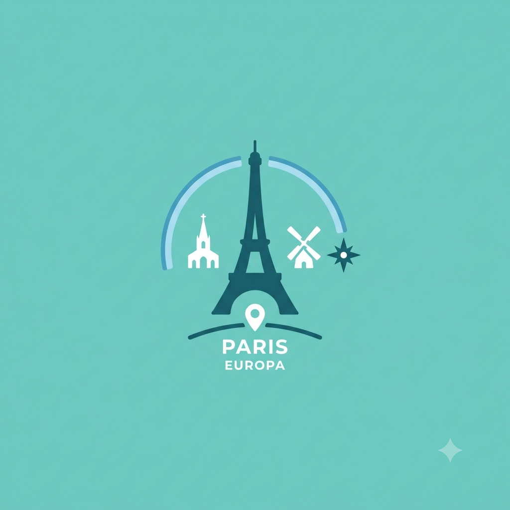

Meu Primeiro Post
Boas Vindas ao meu primeiro blog! Aqui vou comoartilhar algumas dicas de viajens e curiosidadees da área de viajens pela Europa
Blog de aventuras e viajens desbravando as maravilhas da Europa

Boas Vindas ao meu primeiro blog! Aqui vou comoartilhar algumas dicas de viajens e curiosidadees da área de viajens pela Europa
Por:Arthur Miguel Pelozi Rodrigues Fernandez
Nessa Postagem estarei falando sobre como vim parar na Italia depois de ter passado 7 dias em Paris, veja oque eu ja fiz abaixo